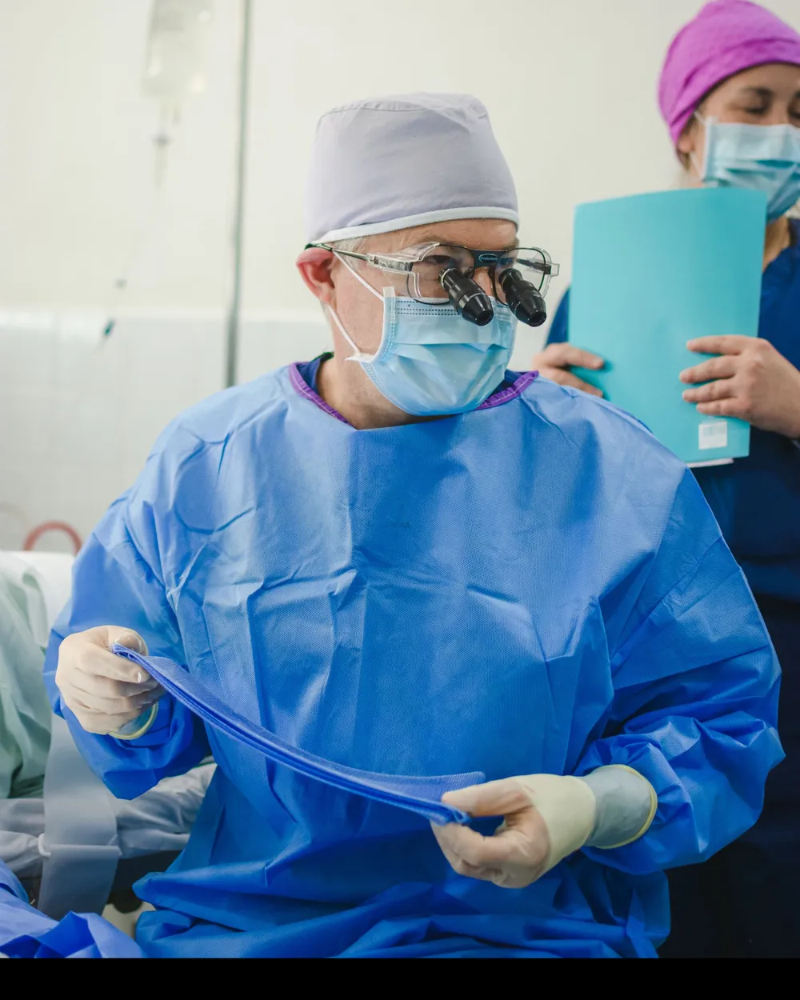

Surgeon
“I had the privilege of taking care of a girl, age 2 and a half years old, with bilateral hand and feet deformities.”
Dr. Patrick MullenKootenai Health, first ALMA mission in 2021
The girl was Ebelinda. Dr. Mullen corrected her right hand, born with syndactyly (webbed fingers), with her mom, Juana Lopez, close by. Her family sent videos of her hand therapy, and on a later ALMA mission the team corrected her left hand too.
Source: Kootenai Health magazine, 2022